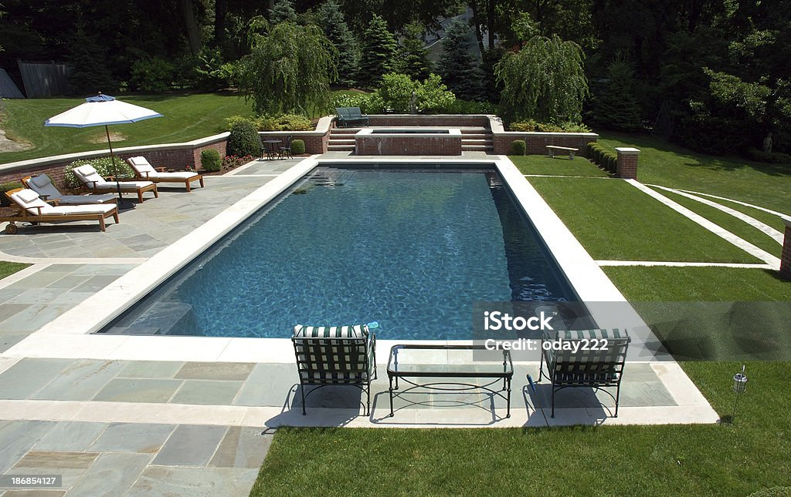
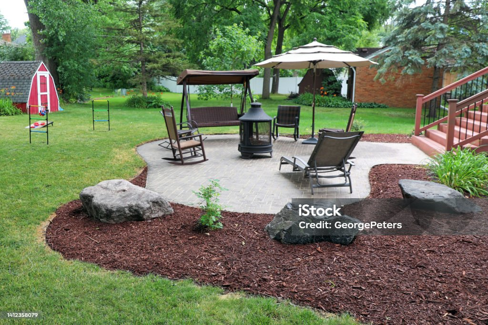
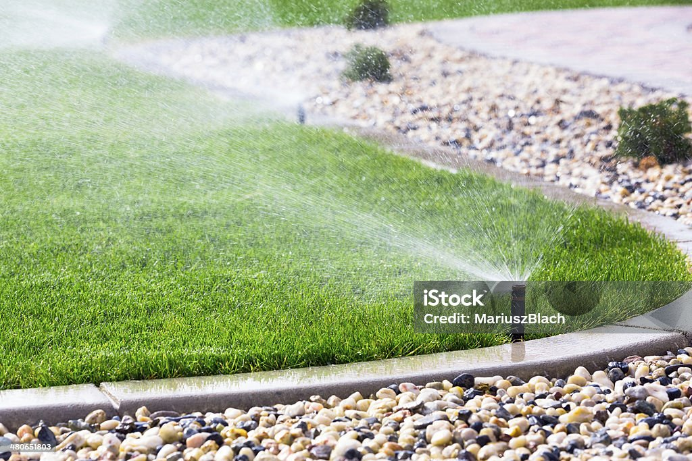
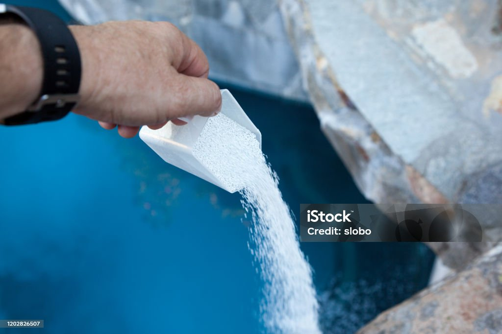
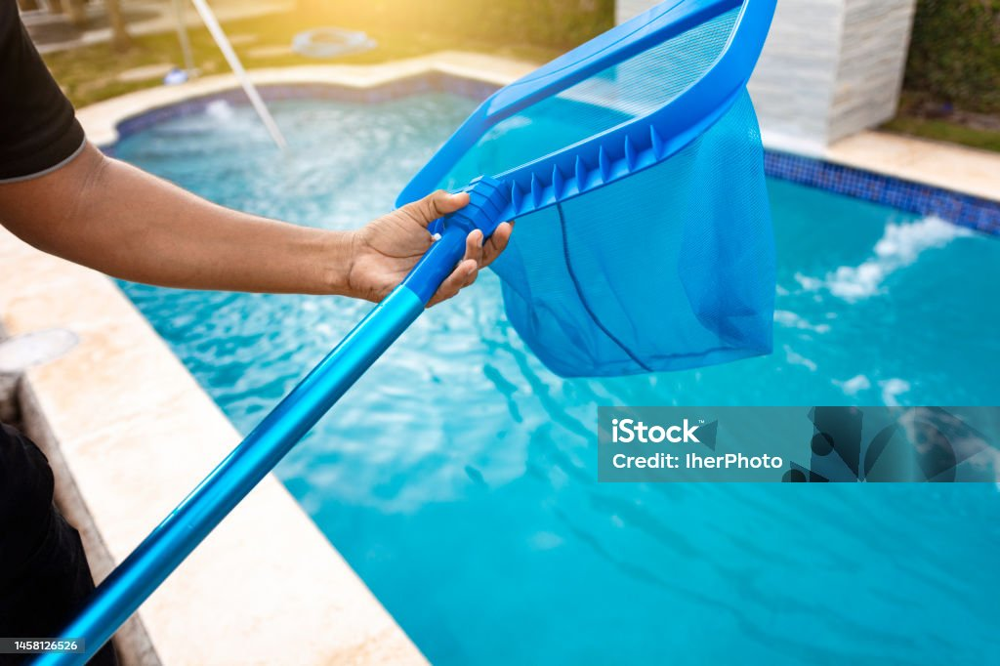
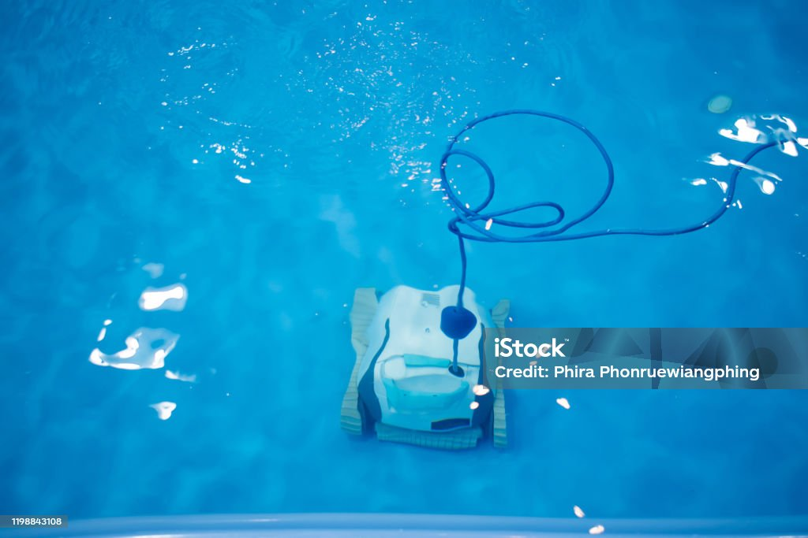
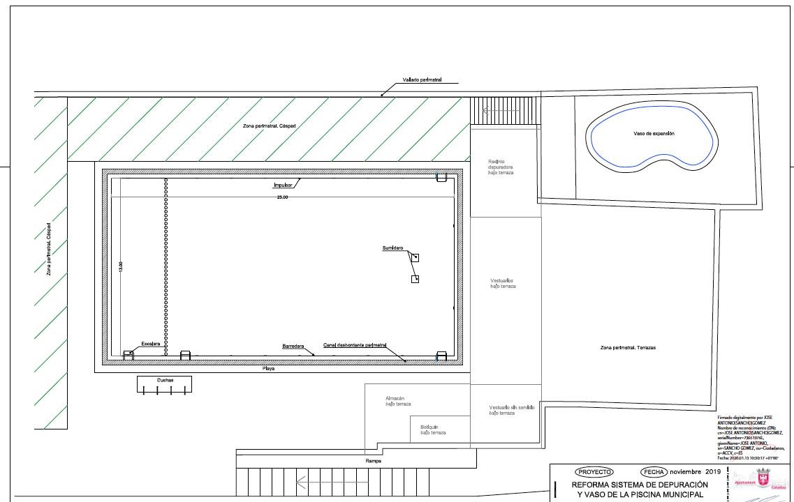
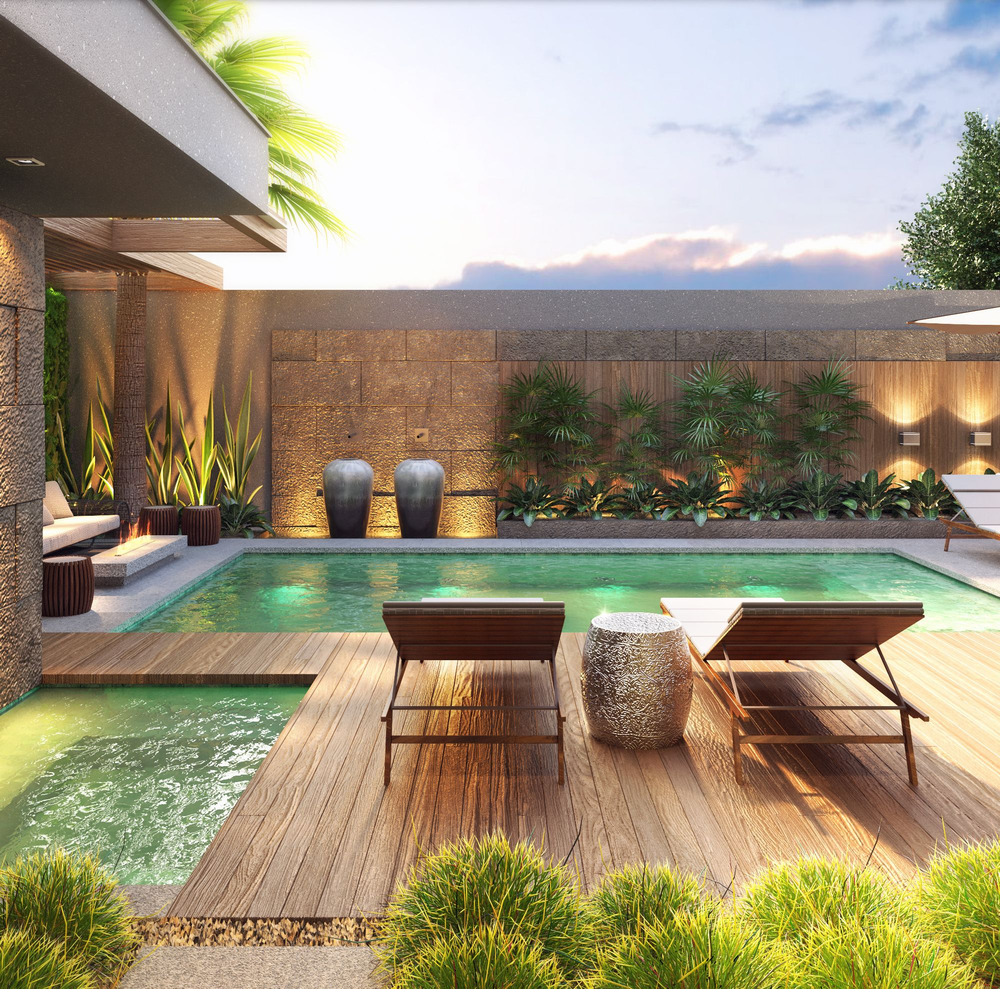

Parquizacion y riegos
Estamos destinados a crear entornos exteriores hermosos y funcionales que complementen perfectamente nuestras piscinas. Nuestro equipo de expertos en paisajismo trabaja en estrecha colaboración con nuestros clientes para diseñar y crear paisajes espectaculares que mejoren el disfrute de su espacio al aire libre.



Limpieza y mantenimiento de piscinas
Ofrecemos servicios integrales de mantenimiento y limpieza de piscinas, diseñados para mantener el agua cristalina y la piscina en condiciones óptimas durante todo el año. Nuestros profesionales altamente capacitados se encargan de todas las tareas de mantenimiento, incluida la limpieza de filtros, el equilibrio químico del agua y la inspección de equipos, para garantizar un funcionamiento eficiente y prolongar la vida útil de la piscina.



Diseño personalizado
En Metro Cuadrado, comprendemos la importancia de satisfacer las necesidades individuales de cada cliente, es por eso que ofrecemos servicios de diseño personalizado para aquellos que desean crear un espacio exterior único y exclusivo que refleje su estilo y personalidad. Nuestro equipo de diseñadores trabaja estrechamente con cada cliente para transformar sus ideas en realidad, brindando soluciones creativas y personalizadas que superan sus expectativas.

